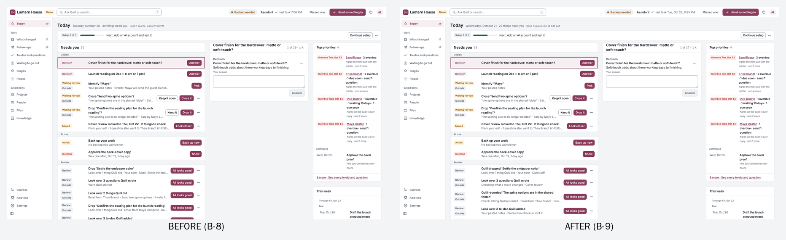
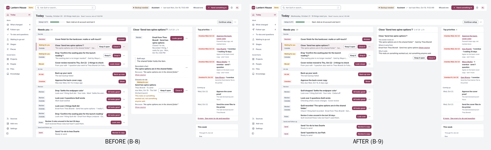
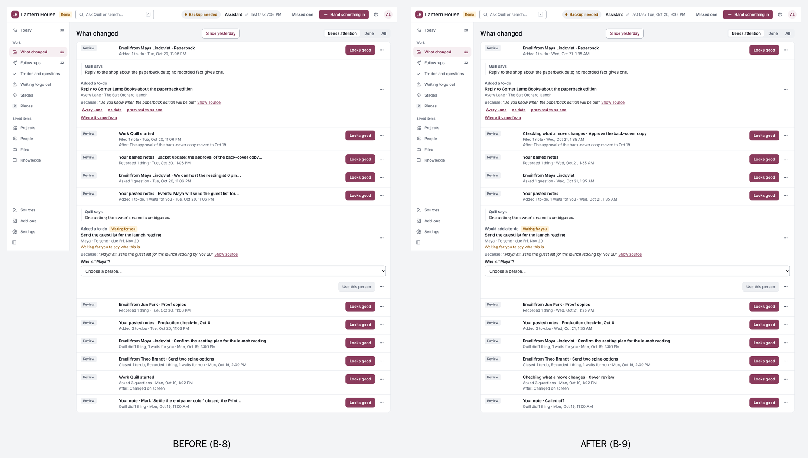
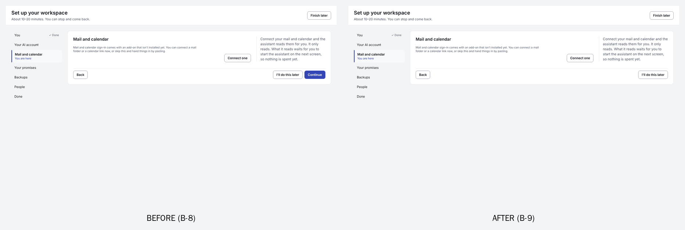
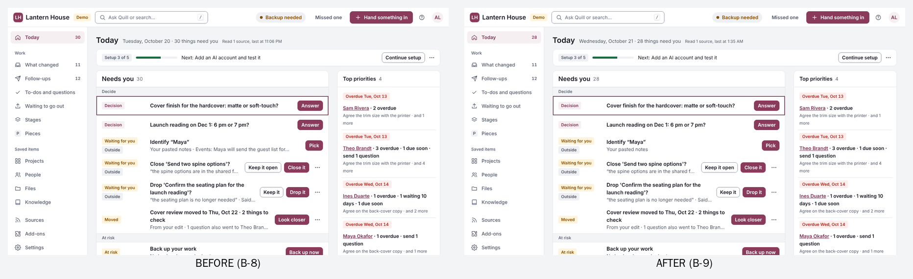
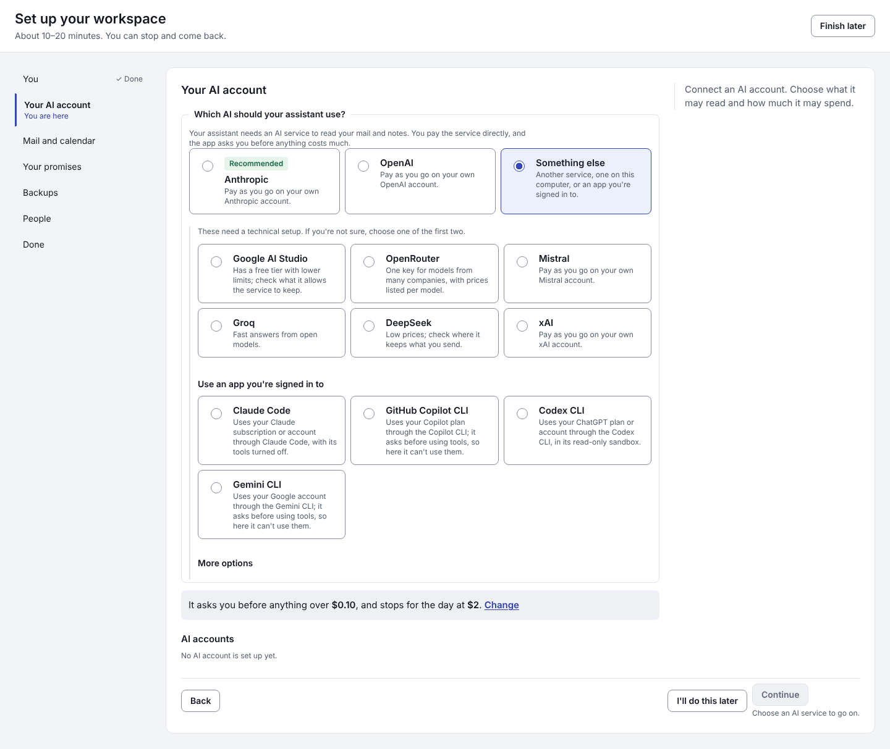
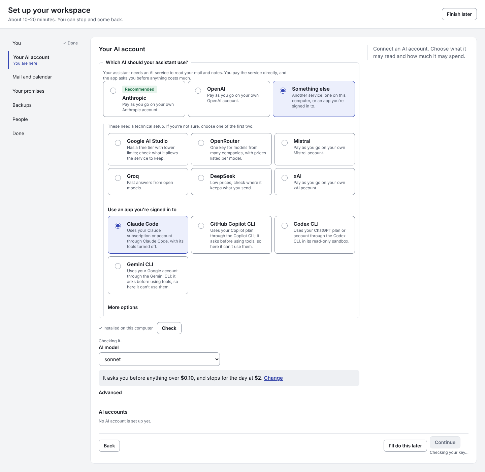
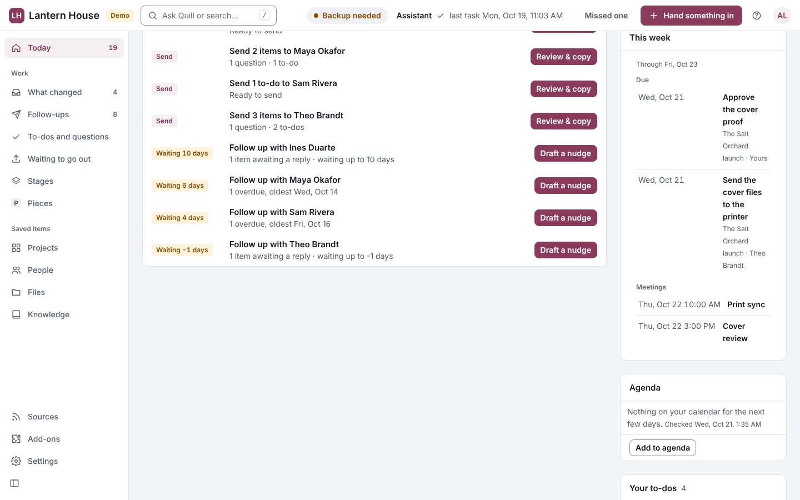

B-9 screenshots
Before = 0f37be4 (B-8) · After = 9e9c3f0 (B-9) · fictional demo data

Today at 1920: each decision is one line; reviews read in the past tense; every title starts in line

A held line's details: only the decision, with the same two answers

What changed: short topics, no cut-off sentences

Mail step with nothing connected: one way to skip

Today at 1280: still 6 lines

AI step: “Something else” stays chosen
A program signed in as you, chosen under “Something else”: raw model names show (sonnet, opus, haiku)
Still a bug: “Waiting -1 days” on Follow up with Theo Brandt, captured just after midnight UTC